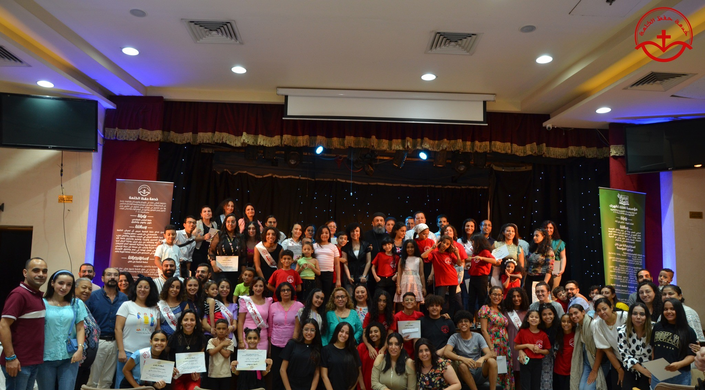
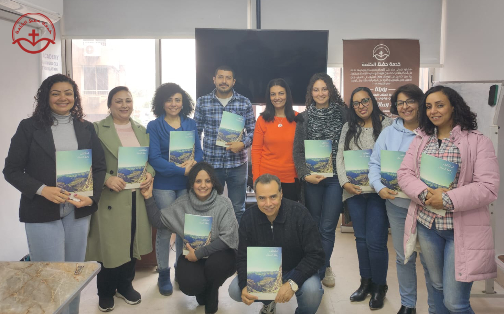
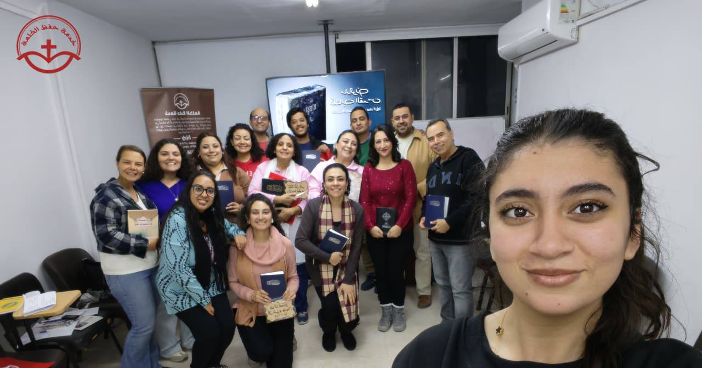
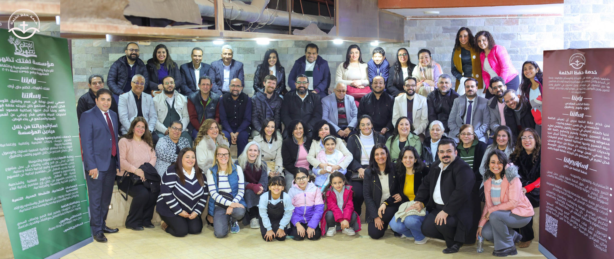

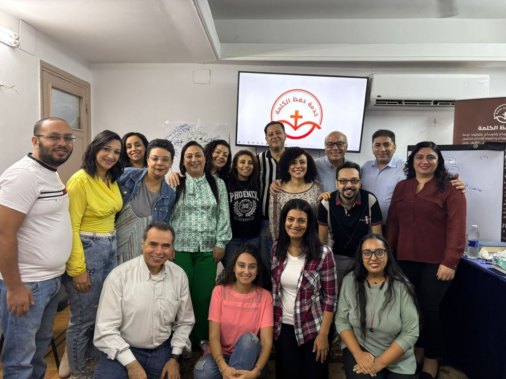





«لأَنَّكَ قَدْ عَظَّمْتَ كَلِمَتَكَ عَلَى كُلِّ اسْمِكَ».. ابدأ يومك وانهيه معانا بكلمة رب المجد.
ساعة يومية بنجتمع فيها بروح واحدة علشان "نفهم ونهلج ونطبق" الوصية في حياتنا. مجموعاتنا متاحة الآن، ومستنيينكم تنضموا لينا.
نحن عيلة "حفظ الكلمة"، انطلقنا في عام 2019 برؤية واضحة تهدف إلى جعل كلمة الله حية ومعاشة في قلب كل إنسان. نحن خدام نسعى لأن نرى الكلمة تتجسد في النفوس "صغاراً وكباراً"، لنحياها بالقول والفعل لملء قامة المسيح.

بدأت رحلتنا في 2019 بهدف واحد: "حفظ الكتاب المقدس بلهج وفهم وتطبيق". نؤمن أن حفظ الوصية هو الطريق لتغيير المجتمع من خلال بناء علاقة قوية وحقيقية بالله.

توريث وتعليم وتسليم كلمة الله محفوظة من جيل إلى جيل. ننشئ أجيالاً تحيا حياة المسيح، قادرة على الصمود أمام تحديات الحياة بكلمة الله الحية في قلوبهم.
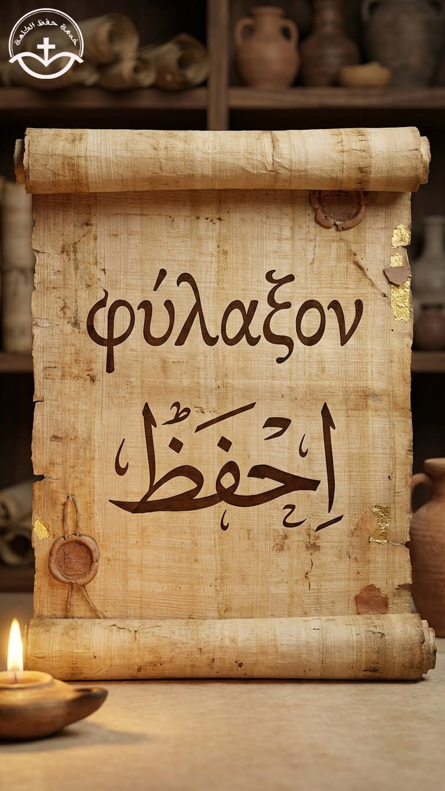
نعتمد على الإبداع والتميز؛ نستخدم وسائل إيضاح صوتية، حركية، ومجسمات وألعاب لتسهيل الحفظ. هدفنا حفظ الوصية بفهم عميق، دون التطرق لأي فكر عقيدي أو تفسيرات كنسية.
نحرص أن تعيش الكلمة متجسدة في كل نفس من خلال استراتيجيات علمية وإبداعية متطورة.
نقدم الكلمة من خلال مجسمات، ألعاب، ووسائل إيضاح صوتية وحركية تجعل عملية الحفظ ممتعة وسهلة لجميع الأعمار.
نستخدم مادة علمية تدرس قدرات الإنسان وإمكانيات الإبداع في عقله لتحسين عملية الحفظ والتذكر الدائم للوصية.
نطوع الفن لخدمة الكلمة عبر مقاطع ملحنة ومنشورة إلكترونياً لتسهيل حفظ الآيات والأسفار في شكل ترانيم وألحان.
نصل بكلمة الله للصم وضعاف السمع بلغة الإشارة، وكبار السن، والمتزوجين، بجانب جميع المراحل الدراسية.
نقيم كرنفالات صيفية ومؤتمرات لتكريم وتشجيع أولادنا في المحافظات، للحفاظ على شغفهم تجاه كلمة الله.
نعمل على توريث الكلمة عبر إعداد أجيال من الخدام القادرين على تسليم الإيمان والكلمة بأساليب تعليمية حديثة.
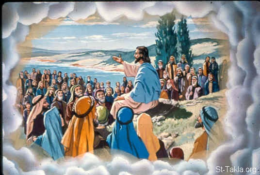
دراسة عميقة حول أسباب حديث السيد المسيح بالأمثال وشرح وافٍ لمعانيها الروحية.
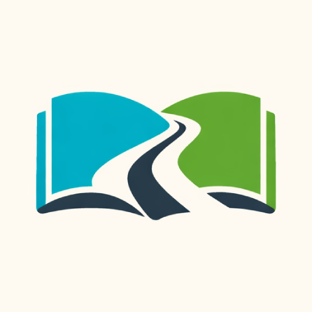
حدث سنوي لقراءة العهد الجديد أو أجزاء من العهد القديم خلال 3 أيام في أجواء روحانية.
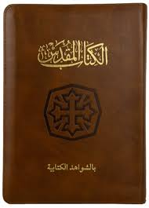
ساعة يومية (صباحية ومسائية) لنبدأ وننهي يومنا بالتمتع بكلمة رب المجد.
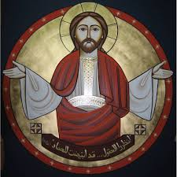
إعداد وتأهيل الخدام لتحفيظ الأمثال من خلال مشاريع تخرج وأنشطة روحية.
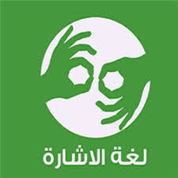
تحفيظ الكلمة لإخوتنا من ضعاف السمع وأصحاب القدرات الخاصة بوسائل تناسبهم.
تقديم الكلمة عبر مقاطع ملحنة ومنشورة على منصاتنا الإلكترونية لتسهيل الحفظ.
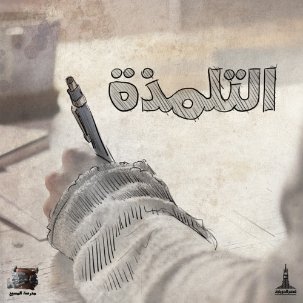
أوساط روحية متخصصة (شباب، قادة، متزوجين) للتمتع بعشرة حية مع الله.
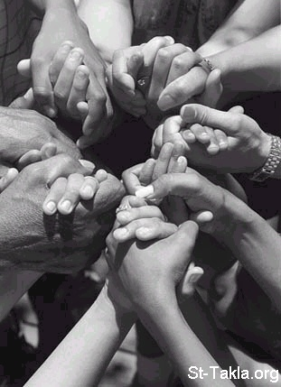
التعاون مع الكنائس والهيئات لتحفيظ الكلمة بوسائل وطرق مبتكرة ومتعددة.
خدمة "حفظ الكلمة" هدفها توصيل كلمة الله لكل قلب، بكل وسيلة ممكنة. كن شريكاً في الخدمة.. وساهم في صنع تأثير أبدي ❤️
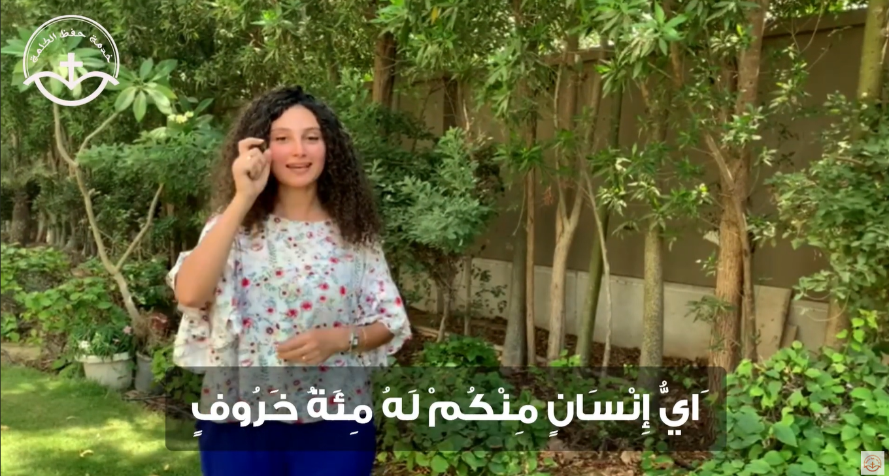
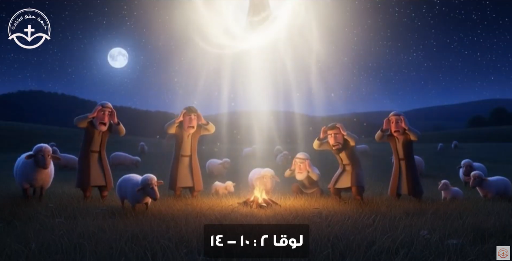
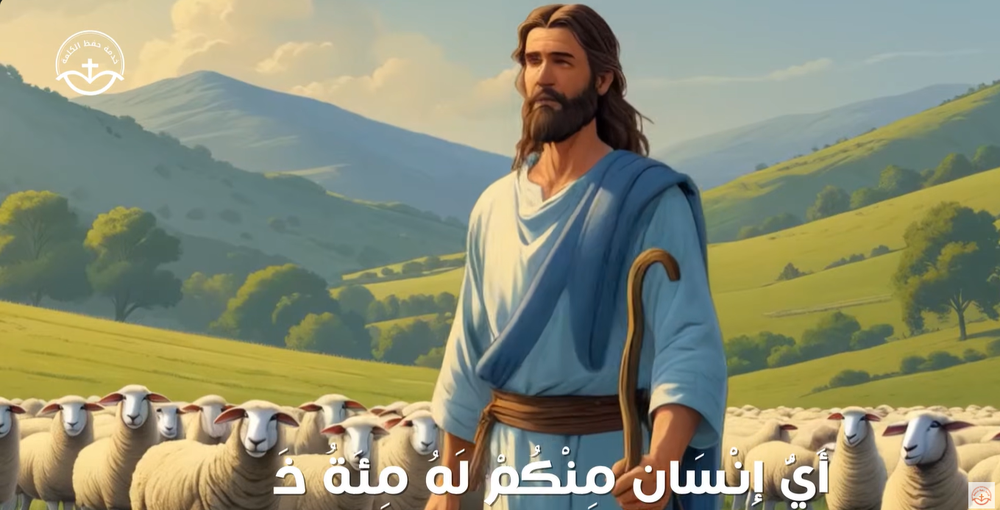
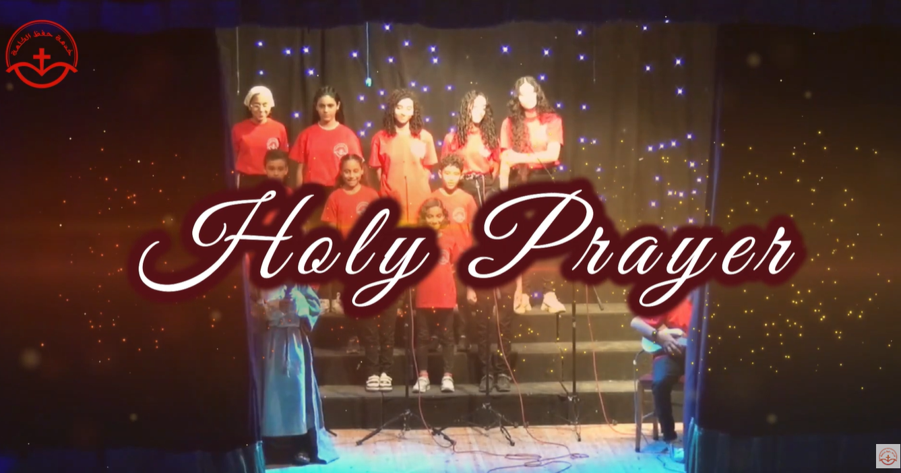
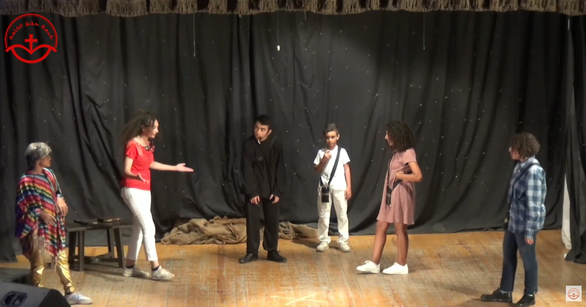
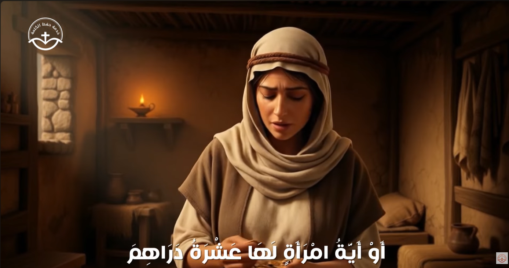

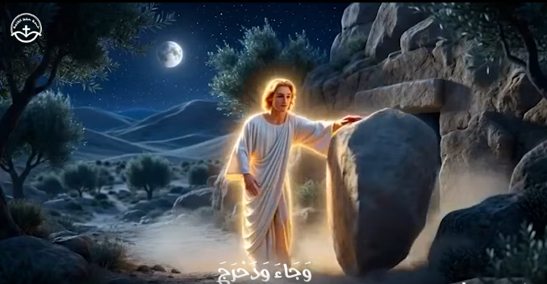
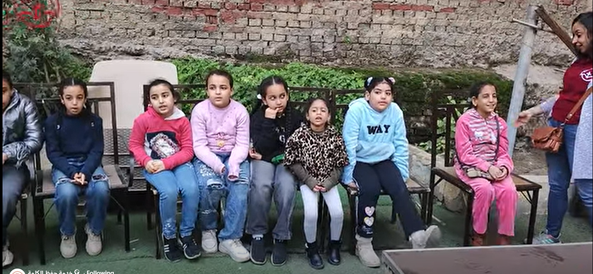
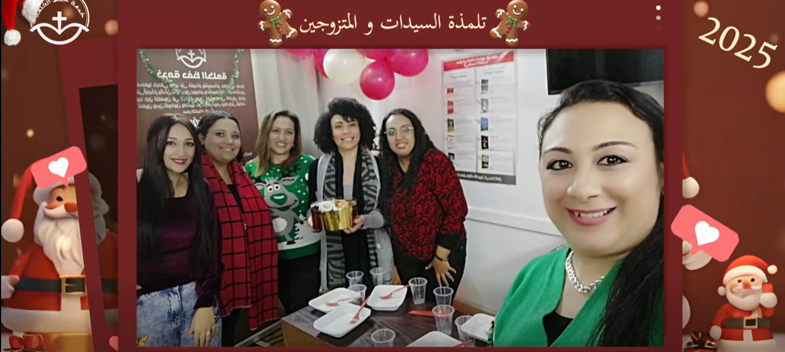
نستخدم كل وسيلة رقمية عشان كلمة ربنا توصل لقلبك وتغير حياتك.
استمتع بحفظ الإنجيل من خلال ألحان مبهجة وفيديوهات تعليمية متميزة على قناتنا الرسمية. اللحن بيخلي الكلمة تعيش جواك.
شاهد على يوتيوبتابعنا على فيسبوك لتصلك آياتنا اليومية، وشارك في المسابقات الكتابية وطلبات الصلاة مع عيلة حفظ الكلمة في مصر.
تابعنا على فيسبوكلو عندك خبرة في المونتاج أو السوشيال ميديا أو البرمجيات، وزنتك تقدر تخدم الكلمة. تواصل معنا مباشرة عبر المسنجر.
تواصل معنا الآنخدمة "حفظ الكلمة" هدفها توصيل كلمة الله لكل قلب، بكل وسيلة ممكنة. بمساهمتك، أنت بتشارك في نشر النور ووصول كلمة الرجاء لناس كتير محتاجة.
كن شريك في الخدمة… وساهم في صنع تأثير أبدي ❤️
دعم الخدمة